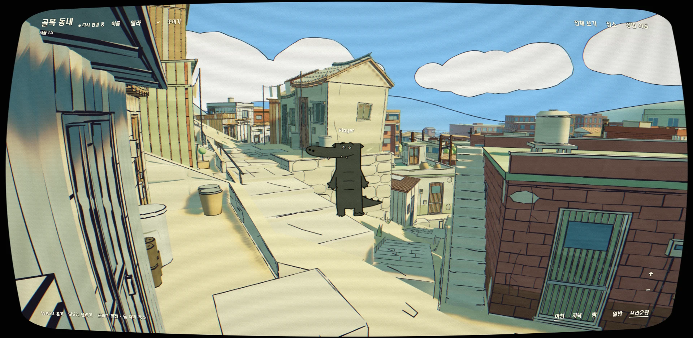
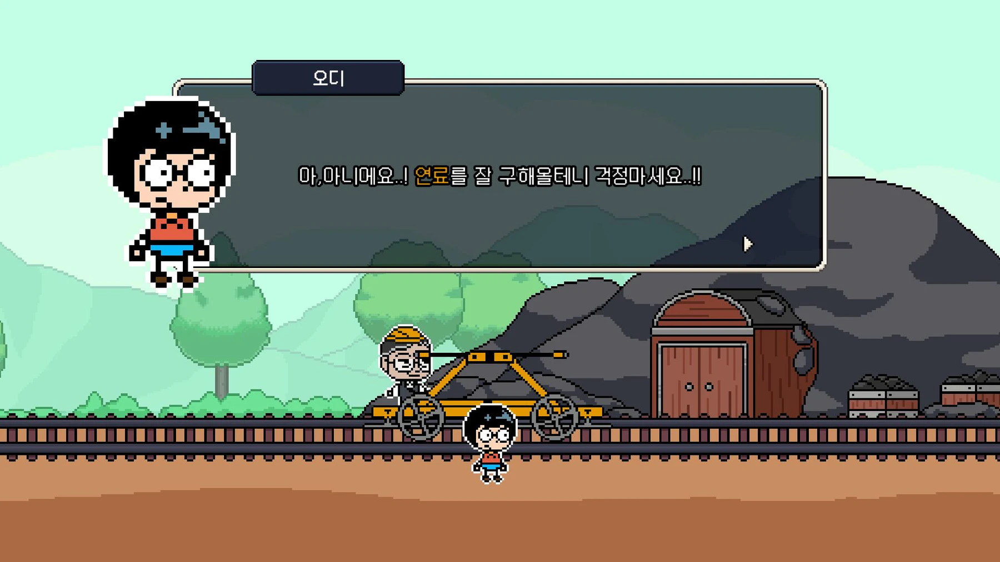
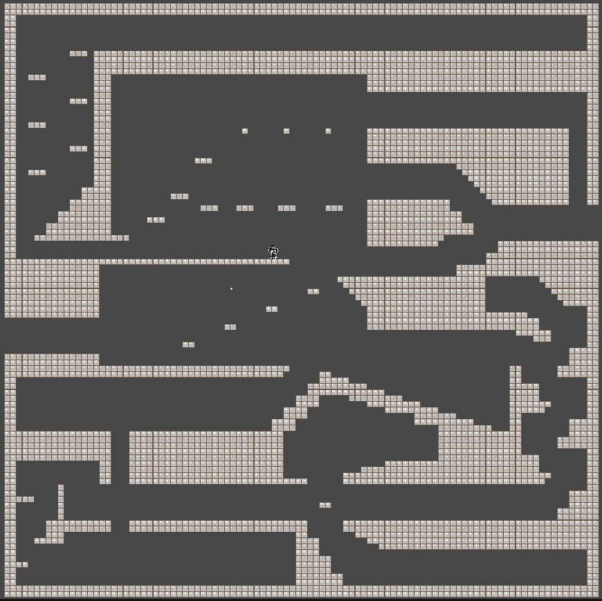
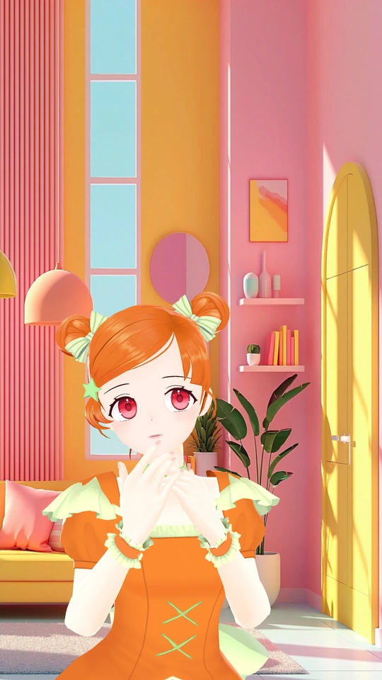
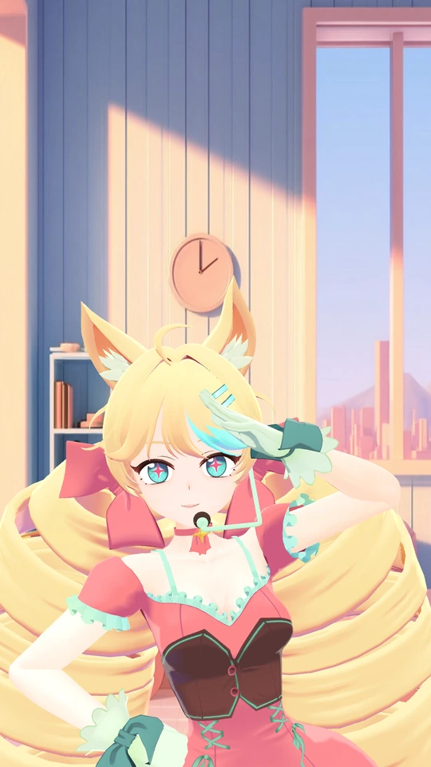
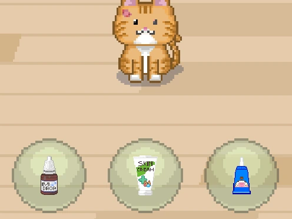
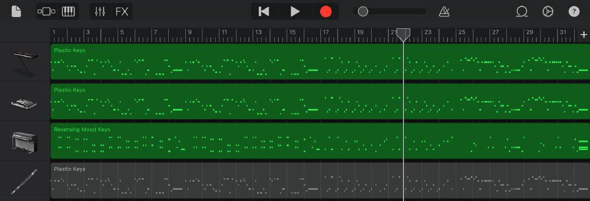

플레이 데이터 저장
SaveData
- 진행
- 마지막 플레이 씬
튜토리얼별 체크포인트 - 플레이어
- 수집 아이템 · 장착 무기 · 재화
- 설정
- 오디오 · 화면 · 언어
SaveGame↓Easy Save 3저장 데이터 로드 · 변경 알림

03CeREELs 메타버스2026.10 – 현재골목 동네·경복궁·창경원을 연결한 3D 웹메트로배니아 구조의 2D 액션 어드벤처입니다.
탐색 동선과 장면 연결을 설계하고 이동·전투·상호작용 시스템을 구현했습니다.




플레이어의 입력과 몬스터의 감지를 분리하고, 이동 모듈은 함께 사용했습니다.
전투는 공통 인터페이스를 두고 플레이어·몬스터의 처리 로직을 나눴습니다.
 MONSTER
MONSTER
공격 모션과 실제 타격 시점이 어긋나지 않도록 탐지·공격 전환·유효 프레임 판정을 분리했습니다.
한 번의 공격에서 단일은 첫 대상만, 범위는 대상별로 한 번씩 피해를 적용했습니다.
Tiled 오브젝트 속성을 포털·스폰·보상 데이터로 변환해, 맵 배치가 장면 이동과 진입 위치로 이어지도록 구성했습니다.



Addressables 자산의 로드·해제와 인스턴스의 생성·반환을 분리하고, 각 단계의 상태를 따로 관리했습니다.
별도 poolKey로 원래 풀에 반환
유효한 인스턴스를 새로 생성
미니게임 플레이와 점수·랭킹 연동,
통화 상태에 따른 3D 캐릭터 제어를 구현했습니다.
음치인 미호가 음표를 모으며 수련한다는
설정을 리듬 액션으로 풀어낸 게임입니다.
사채업자에게 쫓기는 소희의 상황을 짧은 추격전으로 풀어낸 러너 액션 게임입니다.
플레이 결과를 점수와 순위로 정리해 보여주는
두 게임의 공통 시스템입니다.
하나의 WebGL 빌드에서 화면 비율과 Safe Area를 감지해 PC와 모바일 UI 배치를 나눴습니다.
React Native 영상통화 화면에 Unity 3D 캐릭터를 통합했습니다.
통화 상태에 따라 듣기·생각·말하기 행동을 전환합니다.

통화 상태 이벤트를 하나의 캐릭터 상태로 변환해, 앱의 대화 흐름과 애니메이션 전환 기준을 맞췄습니다.

화면 재진입 시 런타임과 렌더링 상태가 어긋나지 않도록 초기화·정지·재개 순서를 분리했습니다.
 앱React Native통화 화면과 사용자 흐름
앱React Native통화 화면과 사용자 흐름

 네이티브 브리지iOS · Android앱과 Unity 요청 전달
네이티브 브리지iOS · Android앱과 Unity 요청 전달
다음 통화를 준비할 때 캐릭터 상태를 초기화하고, 이전 요청의 지연 응답이 새 세션에 전달되지 않도록 처리했습니다.
PrepareForNextSession앱 일시정지·포커스 이탈 시에도
Unity 캐릭터 상태 초기화
대기가 끝난 뒤에도 현재 버전을 다시 확인해
이전 세션의 완료 응답을 전달하지 않도록 했습니다.
characterLoaded→animationApplied캐릭터 표시 후 애니메이션 적용 알림을 순서대로 전달
영화 「버닝」의 장면을 터치 인터랙션으로 재구성한 게임입니다.
AI 이미지 제작·레이어 분리부터 Unity 구현까지 진행했습니다.
장면의 감정과 짧은 조작을 기준으로 원안을 재구성하고, AI 이미지 선별·레이어 분리와 플레이 후 입력·연출 수정을 맡았습니다.
RectTransform[] pieces =
CreatePuzzlePieces(puzzleRoot);
EditorSceneManager.SaveScene(scene, ScenePath);완료 조건·전환 타이밍 검토
아픈 고양이를 돌보고 치료한 뒤 입양 보내는
2D 픽셀아트 육성 시뮬레이션입니다.
고양이를 수집하는 대신, 건강을 회복한 고양이에게 새 가족을 찾아주는 육성 게임입니다.

기획·개발·아트·사운드를 혼자 맡아 Google Play 출시를 완료했습니다.
